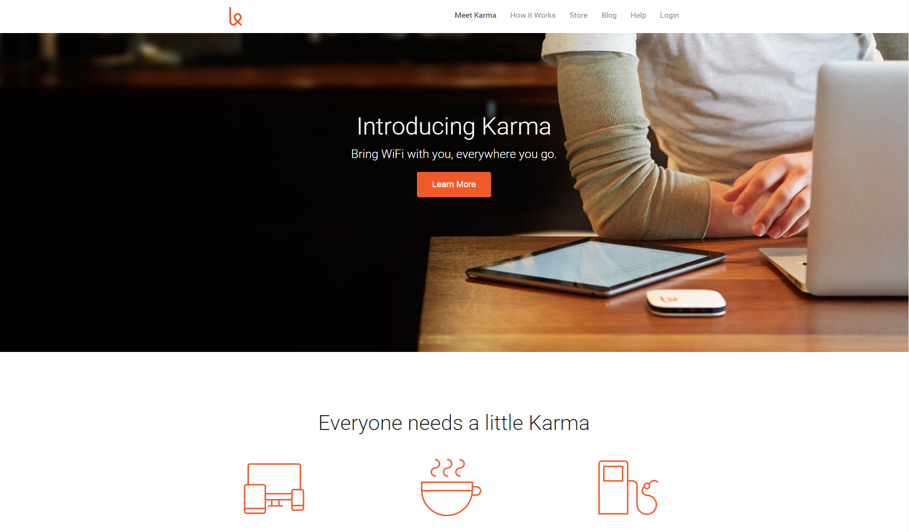

Projects
Hack the New York Times

For this project, Google chrome developer tool was used to change the content of the New York Times. This project not only taught how to use Google chrome developer tools, but also provided insight on CSS.
Karma
Karma's website was coppied and recoded from scratch to show the extend of html and css skills learned throughout the "Structure and Style with HTML and CSS" unit of Thinkful's Front-end Web Development course.